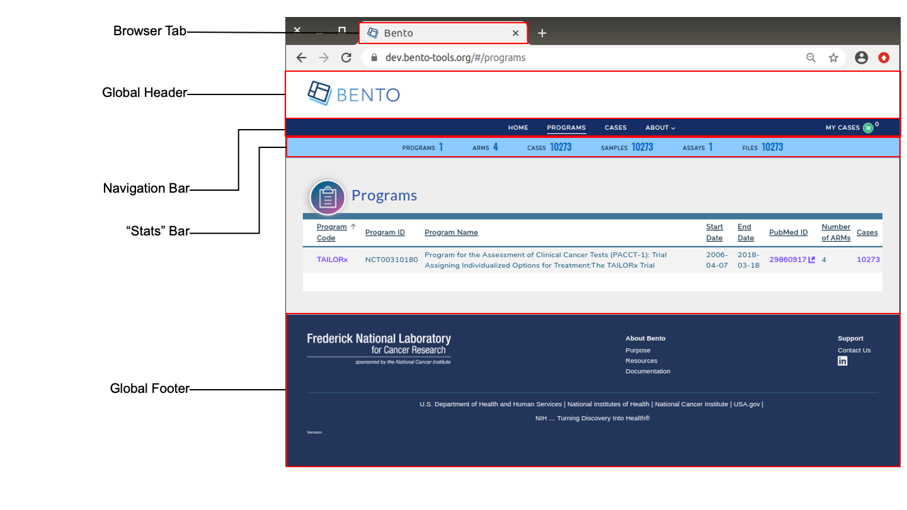

4. Global UI Elements¶
Global UI elements are displayed on every page of a Bento application. These are the (a) Web Browser tab, (b) Global Footer, (c) Navigation Bar and (d) Global Footer. The “Stats” bar, that displays the high-level statistics is a semi-global element as it is displayed only in the Program Listing, Program Detail, Dashboard and Case Detail pages. See below for details.

Global User Interface Elements. Displayed are the global elements that are displayed on all pages of a Bento-based data sharing platform. These are: the web browser tab, the global header, global footer, the navigation bar and the stats bar. The Stats Bar is semi-global in scope as it is displayed in only a subset of the application’s pages.
4.1. Prerequisites¶
The files that specify the configuration parameters of the Bento UI are stored in the GitHub
https://github.com/CBIIT/bento-frontend(representing your GitHub username asYOUR-USERNAME). Create a local clone of your fork into a local directory, represented in these instructions as$(src).All images and icons that you use in your Bento instance should be accessible via a public URL.
Please review the list of GraphQL queries to select query type(s) that return your data of interest.
Here is a mapping of each Global UI element to it’s configuration file:
| Global UI Element | Configuration File |
|---|---|
| Web Browser Tab | $(src)/bento-frontend/public/index.html |
| Global Header | $(src)/bento-frontend/src/bento/globalHeaderData.js |
| Global Footer | $(src)/bento-frontend/src/bento/globalFooterData.js |
| Global Navigation Bar | $(src)/bento-frontend/src/bento/navigationBarData.js |
| Stats Bar | $(src)/bento-frontend/src/bento/globalStatsData.js |
4.2. Web Browser Tab¶
Web browser tabs allow you to have multiple web pages open at the same time. An application-specific icon and text allows an end user to keep track of the tab running a Bento application.
4.2.1. Configuring the Favicon¶
The favorite icon (or favicon) that appears in the web browser tab can be configured in two ways:
Option A: Using a web-based location:
Open
$(src)/bento-frontend/public/index.html.Replace line
<linkrel="shortcut icon" href="https://raw.githubusercontent.com/CBIIT/bento-frontend/master/public/favicon.ico"/>with<linkrel="shortcut icon"href="{URL of the file}"/>
Option B: Using a local file in your repo:
The location is specified in the git repo and is in the file:
$(src)/bento-frontend/public/Replace line
<linkrel="shortcut icon" href="https://raw.githubusercontent.com/CBIIT/bento-frontend/master/public/favicon.ico"/>with<linkrel="shortcut icon"href="/{file_name}"/>
4.2.2. Configuring the Tab Title¶
The HTML Title element <title> defines the document’s title that is shown in a browser’s title bar or a page’s tab.
The Title, or tab text, can be specified as follows:
Open
$(src)/bento-frontend/public/index.html.Replace line
<title>Bento</title>with<title>{ title you want}</title>
4.3. Global Header¶
The Global header appears at the top of all Bento-based applications. It displays a platform-specific logo and image.
4.3.1. Configuring the Global Header Logo¶
Open
$(src)/bento-frontend/src/bento/globalHeaderData.js.Set field
globalHeaderLogowith stored image URL.An optional embedded link can be specified in the field
globalHeaderLogoLink.Set field
globalHeaderLogoAltTextto the ALT tags for the Global Header Logo.Example:
export default {
globalHeaderLogo: '<path to Global Header Logo file>',
globalHeaderLogoLink: '<URL to be embedded in Global Header Logo>',
globalHeaderLogoAltText: '<ALT tags for Global Header Logo.>'
...
}
4.3.2. Configuring the Global Header Image¶
Open
$(src)/bento-frontend/src/bento/globalHeaderData.js.Set field
globalHeaderImagewith a stored image URL.Example:
export default {
...
globalHeaderImage: '<path to Global Header Image file>',
};
4.6. “Stats” Bar¶
The Stats bar displays a set of summary statistics, for a Bento-based application, that gives the end user a high-level view of the volume and diversity of the curated data. A maximum of 6 statistics are allowed to be displayed. If you add more than 6 statistics, only the top 6 will be displayed without any warning or error message.
4.6.1. Configure the Stats Bar¶
Open
$(src)/bento-frontend/src/bento/stats.js.For each object in
globalStatsData:
Set the field
statTitleto the display label for the statistic.Set the field
datatable_fieldto have the respective in the dashboard query.Set the field
typeto have one of the values [field, array, or object] how its returned in the dashboard query.Set the field
statAPIto have its respective field to get initial value from stats queryUnder
GET_GLOBAL_STATS_DATA_QUERYadd the respective GraphQL query field to get the initial value.
Example:
export const globalStatsData = [
// A maximum of 6 stats are allowed
{
statTitle: '<Stat Label>',
datatable_field: '<Your Datatable field name',
datatable_sub_field:: '<Your Datatable subfield name, if applicable>',
type: '<field|array|object>',
statAPI: '<Your GraphQL API query>',
},
...
]
export const GET_GLOBAL_STATS_DATA_QUERY = gql`{
'<Your GraphQL API query>'
...
}
`;
4.7. Suggested Best Practice¶
Dimensions of the favicon: 32 X 32 pixels
The Web Browser Tab title should have a maximum of 33 characters
Dimensions of the Global Header Logo: 468x80 pixels
Dimensions of the Global Header Image: 1200x60 pixels
Dimensions of the Global Footer Logo: 310x80 pixels
Dimensions of the Footer Subsection Icon: 20 X 20 pixels
All images should have a resolution >= 72 ppi and should be in the PNG format.
All Alt tags should be short (maximum limit =125 characters). You may add multiple, comma-separated key words in the Alt tag.